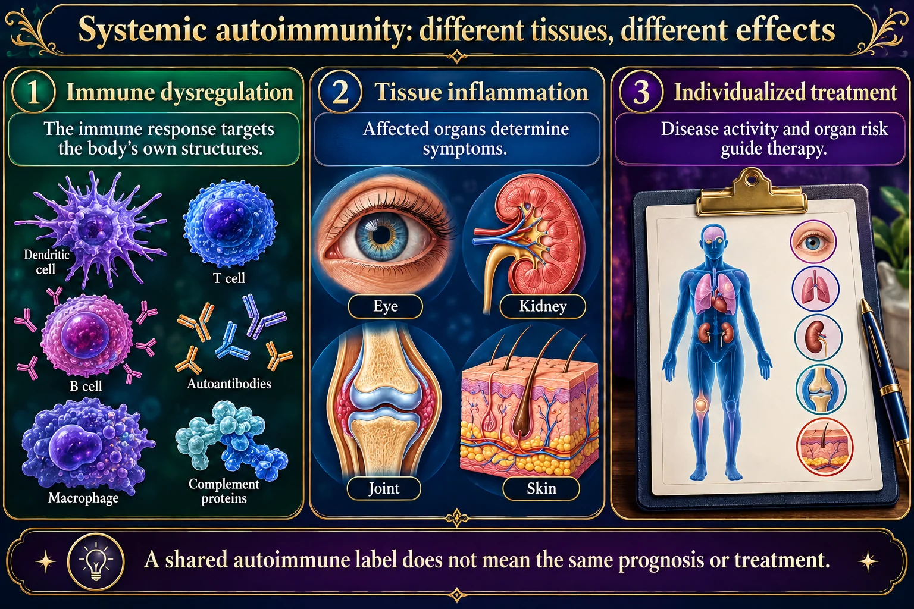

An autoimmune attack on the glands that make moisture. Dry eyes, dry mouth, and the damage that follows.

Every sign on the page is downstream of one idea, and the dental caries is the part people miss.
A shared autoimmune label does not mean the same prognosis or treatment.
Immune dysregulation
The immune response targets the body’s own structures.
Tissue inflammation
Affected organs determine symptoms.
Individualized treatment
Disease activity and organ risk guide therapy.
Lupus
Can affect skin, joints, kidneys, blood and other organs.
Sjögren disease
Dry eyes and mouth are common, with possible systemic involvement.
Care
Monitor symptoms, infection risk, medication effects and organ-specific findings.
An autoimmune disease in which lymphocytes infiltrate and destroy the exocrine glands — the glands that make moisture. Chiefly the lacrimal glands that make tears and the salivary glands that make saliva.
One idea explains the whole disease: the body has attacked its own moisture supply. Every sign follows from something drying out.
Who gets it. Overwhelmingly women — around nine in ten — usually diagnosed after 40. Like other autoimmune diseases it is more common in people who already have one.
| Primary Sjögren’s | Secondary Sjögren’s | |
|---|---|---|
| Occurs | On its own | Alongside another autoimmune disease |
| Commonly with | — | Rheumatoid arthritis, lupus, scleroderma |
| Why it matters | A patient with RA or lupus who now complains of gritty eyes and a dry mouth is describing secondary Sjögren’s, not a new unrelated problem. | |
The two hallmark symptoms have proper names, and both get asked.
What dryness leads to — this is the part that causes real harm
Beyond the glands. Sjögren’s is systemic, and the extra features are easy to miss: profound fatigue, joint pain, dry skin, vaginal dryness, dry cough, Raynaud phenomenon, and sometimes kidney, lung or nerve involvement.
There is also a raised lifetime risk of lymphoma — persistent, firm, one-sided gland swelling or new lymphadenopathy should be reported rather than watched.
There is no cure. Nursing is symptom control and, above all, preventing the damage that dryness causes.
Eyes
Mouth
| Purpose | Agent | Nursing point |
|---|---|---|
| Stimulate secretions | Pilocarpine, cevimeline | Cholinergic — expect sweating, flushing, urinary frequency. Caution in asthma and narrow-angle glaucoma. |
| Reduce eye inflammation | Cyclosporine eye drops | Takes weeks to work — tell the patient, or they will stop it. |
| Joint and systemic disease | Hydroxychloroquine | Needs baseline and periodic eye exams — retinal toxicity. |
| Severe organ involvement | Corticosteroids, immunosuppressants | Infection risk; teach fever reporting. |
Review the medication list for driers. Antihistamines, anticholinergics, tricyclic antidepressants, diuretics and some antihypertensives all reduce secretions and can make Sjögren’s markedly worse. Spotting one of these on the list is often the single most useful thing a nurse does for these patients.
These newly drawn concept diagrams consolidate the retired illustration sets. The accompanying study notes and original handout links remain on this page.